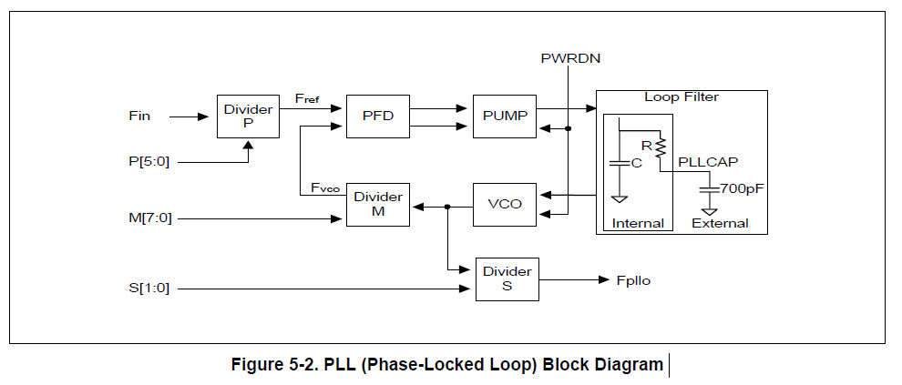
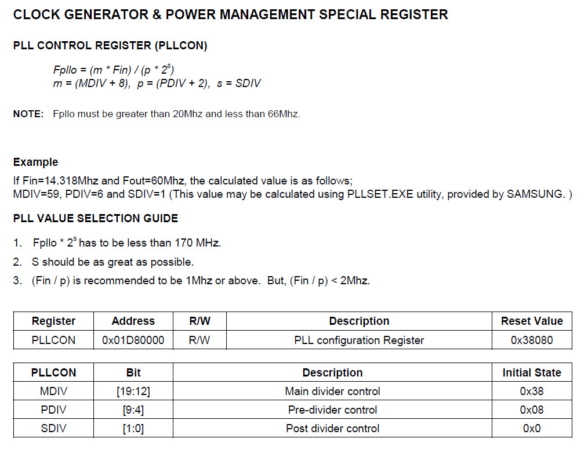

PLL Block


Fin = 8MHz m = MDIV + 8 = 190 + 8 = 198 p = PFIV + 2 = 8 + 2 = 10 s = sDIV = 0 Fpllo = (8MHz * 198) / 10 = 158.4MHz
main.s
.equiv PCONG, 0x1d20040
.equiv PDATG, 0x1d20044
.equiv PLLCON, 0x1d80000
.text
.global _start
_start: b reset
_undef: b .
_swi: b .
_pabort: b .
_dabort: b .
_reserved: b .
_irq: b .
_fiq: b .
reset:
ldr r0, =PLLCON
ldr r1, =(190 << 12) | (8 << 4)
str r1, [r0]
ldr r0, =PCONG
ldr r1, =(1 << 10)
str r1, [r0]
ldr r0, =PDATG
0:
eor r1, #(1 << 5)
str r1, [r0]
ldr r2, =50000
1:
subs r2, #1
bne 1b
b 0b
.end
完成